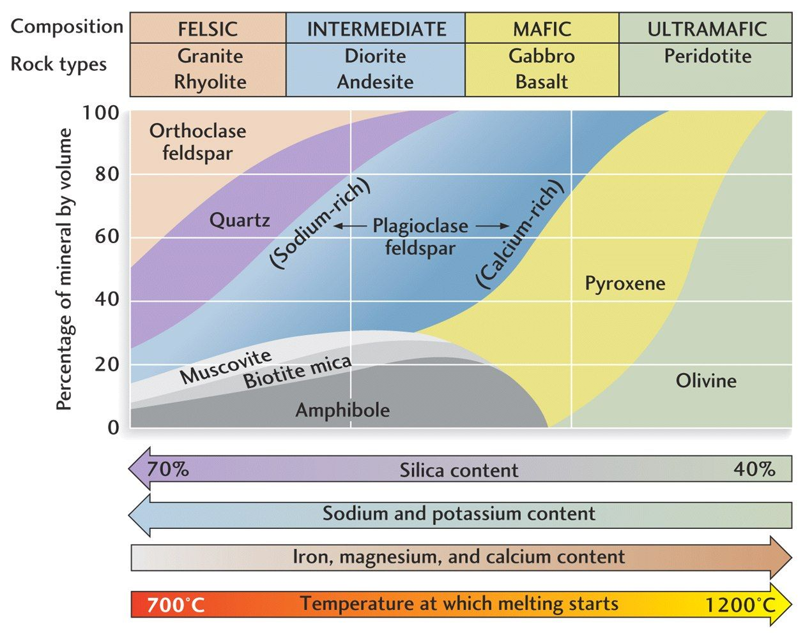

7.2 Igneous Rocks¶
Outline:
Intrusive vs. Extrusive
Mafic vs. felsic
Additional Assigned Reading¶
Article from the National Geographic Mount St. Helens isn’t where it should be. Scientists may finally know why.
Intrusive vs. Extrusive¶
Igneous rocks form from molten rock that cools and solidifies. One way to describe igneous rocks is by the environment (and cooling time) in which they form.
Watch this 5 minute video about intrusive and extrusive igneous rocks.

Intrusive igneous rocks form from cooling magma under ground. Intrusive rocks have more time to cool and large mineral crystals can form in the magma chamber.
Extrusive igneous rocks form above the surface from erupted lava. Extrusive rocks cool very quickly and large mineral crystals do not have enough time to form, so extrusive rocks are fine grained and may have trapped gas bubbles.
Mafic vs. felsic¶
Another scheme for classifying igneous rocks is by their geochemistry i.e. by the chemical composition of the minerals that form them. The end-members of this spectrum are feslic and mafic compositions. This illustration provides an overview of the compositional difference between different types of igneous rocks:

Felsic rocks have more silica, sodium, and potassium than feslic rocks. Felsic rocks are typically lighter in color. Mafic rocks have more iron, magnesium, and calcium than feslic rocks and are usually dark in color.
Watch this 4 minute video about igneous rock classification:

These compositional differences manifest in different material properties which can be observed at active volcanos. Mafic volcanoes (such as Kilauea) produce magmas that have low viscosity and flow. Felsic volcanoes produce more viscous magmas and erupt explosively.
Watch this Bill Nye the Science Guy episode “Volcanoes”:

Here are some additional examples of how different magma compositions have different eruptive styles.
Mafic lava flowing (Kilauea, Hawaii):

The 1980 eruption of Mount Saint Helens:

Dacite dome growing within Mount Saint Helens:

 composition of 65 percent SiO2 (dacite)
composition of 65 percent SiO2 (dacite)
Intermediate eruption (Krakatau, Indonesia):